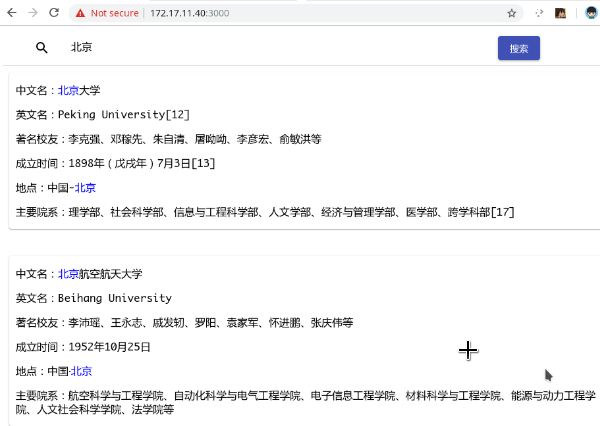
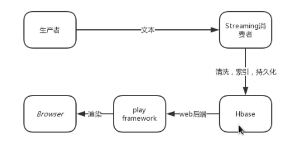
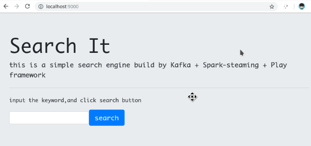
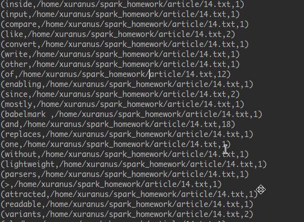
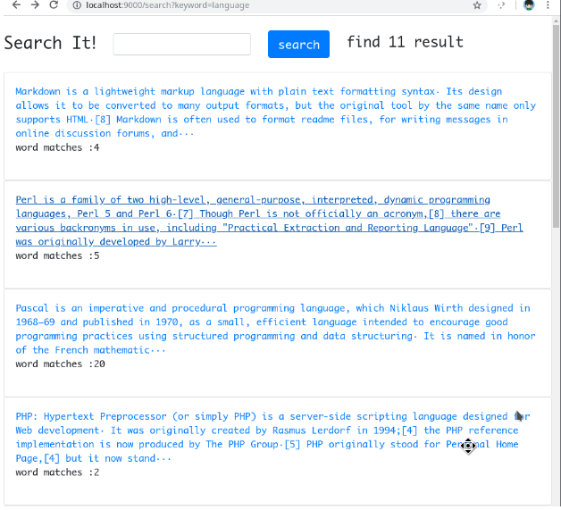
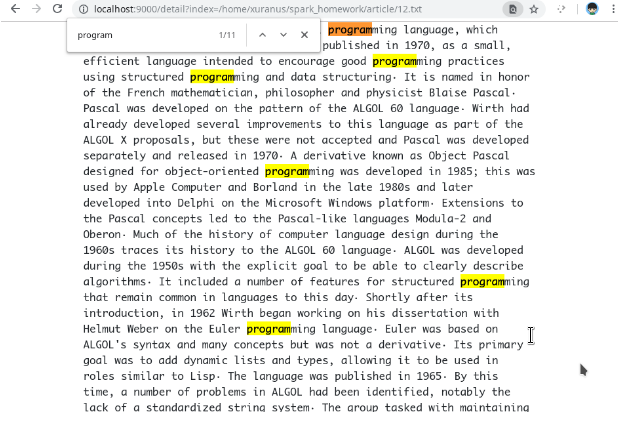
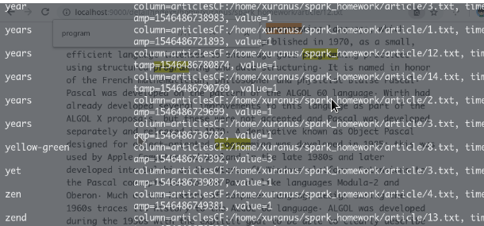

静态搜索引擎
上一节已经配置了一个hadoop+spark集群，xuranus@172.17.11.40 为本机，在本机NAT下六个节点：
集群说明
xuranusMaster@172.16.173.136 |
Hbase部署在172.16.173.136～139上。
建表
Hbase Shell下创建新表：create ‘school_tb’,’attr’
用https://github.com/s-top/Baike-KnowledgeGraph提供的百科上爬来的部分大学名录构建表：列族atter包含chinese_name,english_name,famous_alumni,found_time,location,major_department这些属性，学校名字作为rowkey
插入数据的java代码：public static void buildSchoolData() {
String path = "/home/xuranus/Desktop/hadoop/homework/all.json";
Gson gson = new Gson();
JsonParser jsonParser = new JsonParser();
String jsonStr = "";
String lineStr;
try {
BufferedReader in = new BufferedReader(new FileReader(new File(path)));
while((lineStr = in.readLine())!=null) {
jsonStr = jsonStr.concat(lineStr);
}
} catch (Exception e) {
e.printStackTrace();
}
JsonObject jsonObject = jsonParser.parse(jsonStr).getAsJsonObject();
JsonArray schools = jsonObject.get("data").getAsJsonArray();
for(JsonElement school:schools) {
String chinese_name = school.getAsJsonObject().get("中文名").getAsString();
String location = school.getAsJsonObject().get("所属地区").getAsString();
String abbreviation = school.getAsJsonObject().get("简称").getAsString();
String major_department = school.getAsJsonObject().get("主要院系").getAsString();
String found_time = school.getAsJsonObject().get("创办时间").getAsString();
String english_name = school.getAsJsonObject().get("英文名").getAsString();
String famous_alumni = school.getAsJsonObject().get("知名校友").getAsString();
try {
put("school_tb", chinese_name, "attr", "chinese_name", chinese_name);
put("school_tb", chinese_name, "attr", "location", location);
put("school_tb", chinese_name, "attr", "abbreviation", abbreviation);
put("school_tb", chinese_name, "attr", "major_department", major_department);
put("school_tb", chinese_name, "attr", "found_time", found_time);
put("school_tb", chinese_name, "attr", "english_name", english_name);
put("school_tb", chinese_name, "attr", "famous_alumni", famous_alumni);
} catch (Exception e) {
e.printStackTrace();
}
}
}
建立索引
划分中文单词，统计词频建立索引：public class Test3 {
public static Configuration conf;
public static void put(String tablename,String row, String columnFamily,String column,String data) throws Exception {
HTable table = new HTable(Test3.conf, tablename);
Put p1=new Put(Bytes.toBytes(row));
p1.add(Bytes.toBytes(columnFamily), Bytes.toBytes(column), Bytes.toBytes(data));
table.put(p1);
System.out.println("put '"+row+"','"+columnFamily+":"+column+"','"+data+"'");
}
public static class TokenizerMapper extends TableMapper<Text, Text> {
private Text word = new Text();
private Text valueInfo = new Text(); //存储词频
public void map(ImmutableBytesWritable key, Result value, Context context) throws IOException, InterruptedException {
List<Cell> cs = value.listCells();
for (Cell cell : cs) {
byte[] bt = cell.getValue();
InputStream ip = new ByteArrayInputStream(bt);
Reader read = new InputStreamReader(ip);
IKSegmenter iks = new IKSegmenter(read, true);
Lexeme t;
while ((t = iks.next()) != null) {
String rowkey = new String(key.get());
word.set(t.getLexemeText().concat(":").concat(rowkey));
valueInfo.set("1");
context.write(word, valueInfo);
}
}
}
}
public static class InvertedIndexCombiner extends Reducer<Text, Text, Text, Text>{
private Text info = new Text();
protected void reduce(Text key, Iterable<Text> values, Reducer<Text, Text, Text, Text>.Context context)
throws IOException, InterruptedException {
int sum = 0;
for (Text value : values) {
sum += Integer.parseInt(value.toString() );
}
int splitIndex = key.toString().indexOf(":");
info.set( key.toString().substring( splitIndex + 1) +":"+sum );
key.set( key.toString().substring(0,splitIndex));
context.write(key, info);
}
}
public static class InvertedIndexReducer extends Reducer<Text, Text, Text, Text>{
private Text result = new Text();
protected void reduce(Text key, Iterable<Text> values, Reducer<Text, Text, Text, Text>.Context context) throws IOException, InterruptedException {
//生成文档列表
String fileList = new String();
for (Text value : values) {
fileList += value.toString()+";";
}
result.set(fileList);
context.write(key, result);
try{
System.out.println("-------InvertedIndexReducer-------");
System.out.println("key="+key.toString());
System.out.println("value="+fileList);
System.out.println("----------------------------------");
put("keyword_map",key.toString(),"cf","data",fileList);
} catch (Exception e) {
e.printStackTrace();
}
}
}
public static void start() throws Exception {
System.setProperty("HADOOP_USER_NAME", "root");
System.setProperty("hadoop.home.dir","/home/xuranus/Desktop/hadoop/hadoop-2.7.6");
conf = new Configuration();
String tablename="school_tb";
String columnFamily="attr";
conf.set("hbase.zookeeper.quorum","zookeeper001,zookeeper002,zookeeper003");
conf.set("hbase.zookeeper.property.clientPort", "2181");
conf.set("hbase.master", "172.16.173.136:16000");
conf.addResource("/home/xuranus/hdfs-site.xml");
Job job = Job.getInstance(conf, "word count");
job.setJarByClass(Test3.class);
Scan scan = new Scan();
scan.addColumn(Bytes.toBytes(columnFamily), Bytes.toBytes("chinese"));
scan.addColumn(Bytes.toBytes(columnFamily), Bytes.toBytes("location"));
scan.addColumn(Bytes.toBytes(columnFamily), Bytes.toBytes("abbreviation"));
scan.addColumn(Bytes.toBytes(columnFamily), Bytes.toBytes("major_department"));
scan.addColumn(Bytes.toBytes(columnFamily), Bytes.toBytes("found_time"));
scan.addColumn(Bytes.toBytes(columnFamily), Bytes.toBytes("english_name"));
scan.addColumn(Bytes.toBytes(columnFamily), Bytes.toBytes("famous_alumni"));
TableMapReduceUtil.initTableMapperJob(tablename, scan, TokenizerMapper.class,Text.class, Text.class, job);
job.setMapOutputKeyClass(Text.class);
job.setMapOutputValueClass(Text.class);
job.setCombinerClass(InvertedIndexCombiner.class);
job.setReducerClass(InvertedIndexReducer.class);
job.setOutputKeyClass(Text.class);
job.setOutputValueClass(Text.class);
FileOutputFormat.setOutputPath(job, new Path("hdfs://172.16.173.136:9000/output"));
System.exit(job.waitForCompletion(true) ? 0 : 1);
}
}
Ouput目录输出如下:1902年 东南大学:1;北京师范大学:1;南京大学:1;
1903年 中南大学:1;湖南大学:1;
1905年 中国农业大学:1;复旦大学:1;
1907年 同济大学:1;
....
界面和查询
查询做成了一个java web程序，后端springboot，接收输入关键词，在索引表中查找，返回词条索引字符串，拆分字符串做处理，在school_tb中查询每个键，把结果存成数组以json形式发到前端。
react做前端接受结果做渲染，用正则表达式高亮关键字，效果如下：

自此，一个简单的wordcount搜索引擎就实现了。但是，这只能给静态的资源提供搜索，进一步的，我们可以用spark实现动态增加词条资源。
动态搜索引擎
集群说明
一共有6个节点xuranusMaster:172.16.173.136
xuranusSlave1:172.16.173.137
xuranusSlave2:172.16.173.138
zookeeper001:172.16.173.139
zookeeper002:172.16.173.140
zookeeper003:172.16.173.141
其中服务的分布：Hadoop:xuranusMaster xuranusSlave1 xuranusSlave2
Hbase:xuranusMaster xuranusSlave1 xuranusSlave2
Zookeeper:zookeeper001 zookeeper002 zookeeper003
spark:xuranusMaster xuranusSlave1 xuranusSlave2
kafka:xuranusMaster xuranusSlave1 xuranusSlave2
算法说明
本次实验用kafka+spark-streaming搭建了一个实时流式计算集群。
先从wikipedia上下了10多篇关于编程语言的文章存储在本地，用scala写了一个kafka生产者，读取文件，并向消息队列发送文本(每隔2s发送一次，模拟爬虫)。
生产者：KafkaProducerThread.scala
class KafkaProducerThread extends Thread{ |
streaming作为kafka消费者从消息队列拿key（存储目录）和value（文本内容）。在每个RDD接受到的数据中，先用正则匹配去除符号，清洗数据，然后分割统计词频建立所有存储到hbase
消费者 KafkaStreamingConsumer.scala文件
class KafkaStreamingConsumer extends Thread{ |
Ui用web呈现，后端渲染，框架采用sbt play framework,主要的路由：实现了index,search,detail三个页面对应主页，搜索页，详细页。
package controllers |
程序结构

运行说明
先启动web服务器，浏览器打开，进入搜索界面：

开启消费者，等待接受消息，然后开启生产者开始写入。（此处两个进程为了便于测试用线程模拟）。console输出如下：(词条，索引，索引对应的词条频数)被持久化到hbase

输入词条，开始查询，每隔几秒刷新一次，发现有新的搜索记录产生（录屏中有体现）

点击一条记录，可以查看详细文本：Ctrl+F可以看到匹配的关键词

查看hbase的信息，发现索引已生成：
